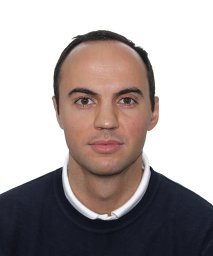
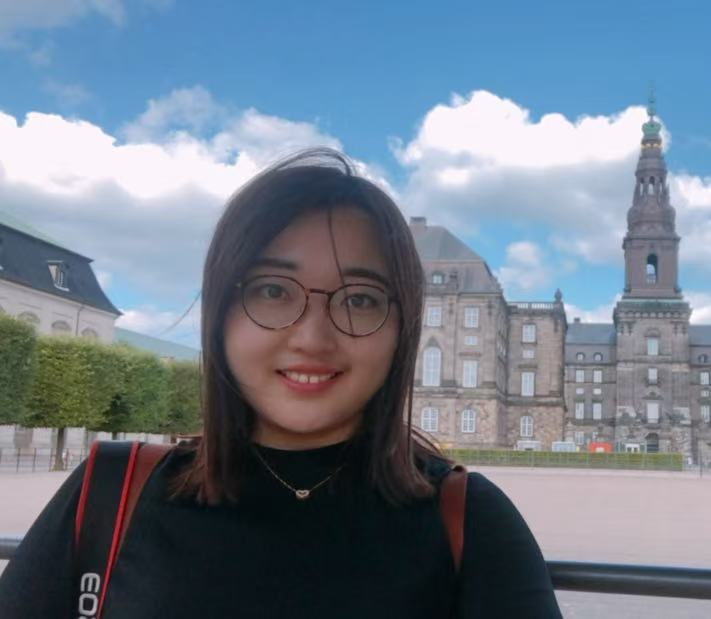
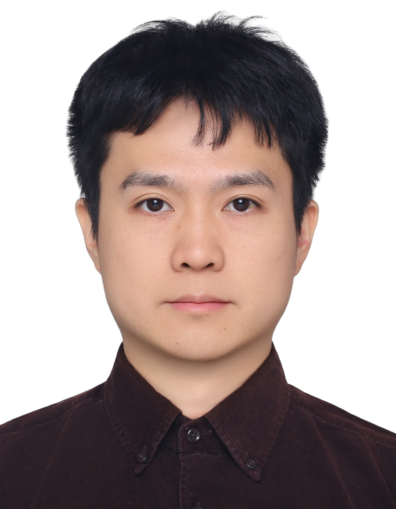

Emanuele Sansone
MIT/KU Leuven
Neuro-symbolic learning, reasoning and planning, agents, tool use, long-horizon decision-making.
Speaker profileThe 18th Asian Conference on Machine Learning
01
The latest wave of AI—including large language models, multimodal foundation models, and agent-based systems—has made machine learning far more capable, but it has also exposed persistent weaknesses.
Neural models can be powerful predictors and generators, yet they often struggle with logical consistency, verifiable reasoning, controllable behavior, transparent decision processes, and robust long-horizon planning. Neuro-symbolic machine learning offers a principled route to these challenges by coupling neural representation learning with symbolic knowledge, rules, programs, and reasoning procedures.
NeSyML 2026 will connect classical neuro-symbolic paradigms—including abductive learning, differentiable reasoning, semantic and logical constraints, verification-oriented learning, and programmatic knowledge induction—with modern foundation models. It is intended for researchers, students, and practitioners working at the interface between neural models and symbolic reasoning.
Guiding question How can neuro-symbolic machine learning help build AI systems whose behavior is learnable, reasoned, and verifiable?
02
03

MIT/KU Leuven
Neuro-symbolic learning, reasoning and planning, agents, tool use, long-horizon decision-making.
Speaker profile
Singapore A*STAR
Neuro-symbolic reasoning, verification learning, reliable AI systems.
Speaker profile04
Half-day workshop
05

National Key Laboratory for Novel Software Technology
Nanjing University
National Key Laboratory for Novel Software Technology
Nanjing University
National Engineering Laboratory for Big Data Analysis and Applications
Peking University
State Key Laboratory of CAD&CG
Zhejiang University
06